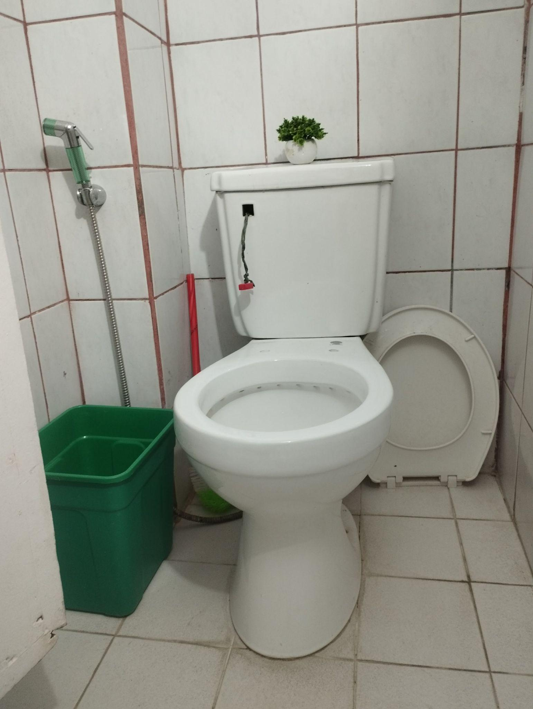
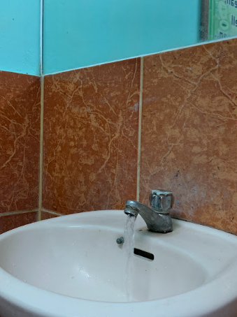
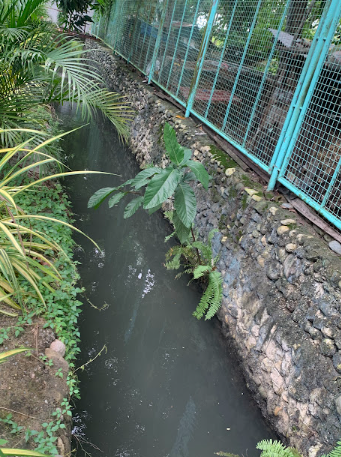
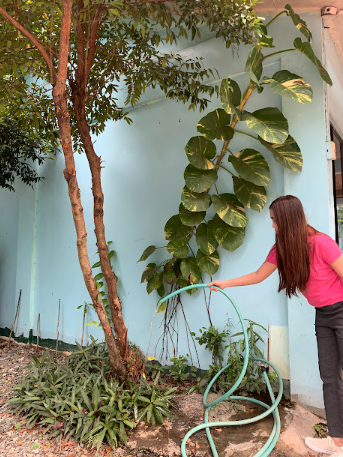

Urdaneta City University (UCU) has implemented the Treated Water Consumption Program as a key initiative under its broader commitment to environmental sustainability, aligned with the Water and Infrastructure categories of the UI GreenMetric World University Rankings. The program focuses on the responsible utilization of treated water for non-potable campus operations, ensuring water conservation, reducing municipal demand, and promoting sustainable resource management.
A key feature of the program is the establishment of clear guidelines governing the allocation and use of treated water. The university has prioritized the replacement of potable water with treated alternative sources in areas such as landscaping, cleaning, and sanitation. By utilizing treated water instead of drinking-grade water for these processes, UCU significantly reduces its environmental footprint while supporting closed-loop resource systems.
In support of these efforts, the university has invested in the installation of dedicated storage and distribution infrastructure. Storage tanks are strategically located across campus to capture and preserve treated water, ensuring a steady supply for daily operations. This network is continuously inspected and maintained to prevent leaks, monitor water levels, and optimize distribution efficiency.
The treated water is extensively utilized for maintaining the university’s landscapes and green spaces, including gardens and lawns. It is also routed to restroom facilities for toilet flushing and used for general grounds maintenance. The integration of treated water into these routine activities demonstrates the university's commitment to optimizing resource efficiency in its daily campus maintenance.
| Treated Water Consumption & Infrastructure | |
|---|---|
|
 Restroom hand washing taps and water-efficient fixtures
|
 Dedicated pipeline network distributing treated water
across campus facilities
|
| Landscape & Garden Irrigation | Restroom Flushing Connections |
|
 Active landscape watering utilizing recycled water
resources
|
 Wastewater treatment pipelines routed to restrooms for
flushing
|
This program is further strengthened by its integration with the university’s rainwater harvesting system. Combining treated water utilization with captured rainwater provides the campus with a highly resilient and diversified supply of alternative water, reducing reliance on external potable water networks and building long-term climate adaptation capacity.
In addition to infrastructure improvements, UCU places strong emphasis on education and community awareness. Campaigns, signages, and seminars are conducted to encourage students, faculty, and staff to practice water conservation. By fostering a culture of responsibility, the university ensures that water-saving technologies are supported by conscious stakeholder behavior.
Through the implementation of the Treated Water Consumption Program, Urdaneta City University continues to lead by example in campus sustainability. By optimizing alternative water sources, enhancing monitoring systems, and engaging the campus community, UCU aligns its operations with global rankings standards, showcasing a holistic approach to sustainable water management.